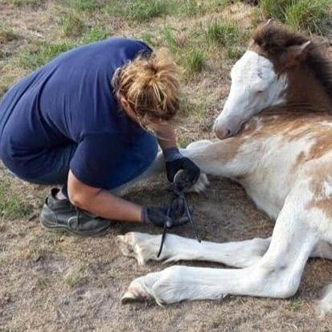
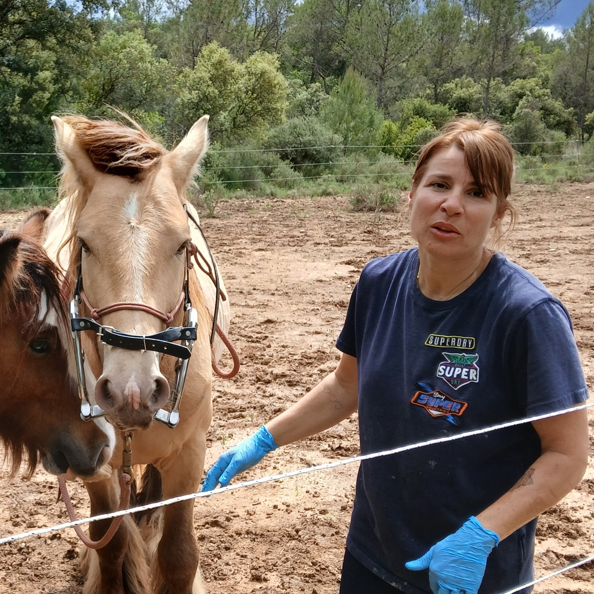
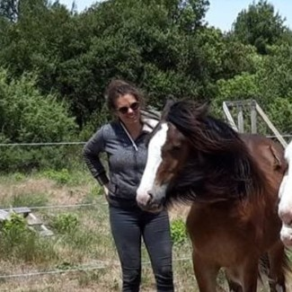
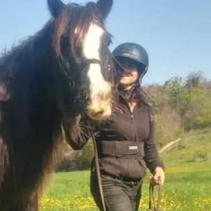
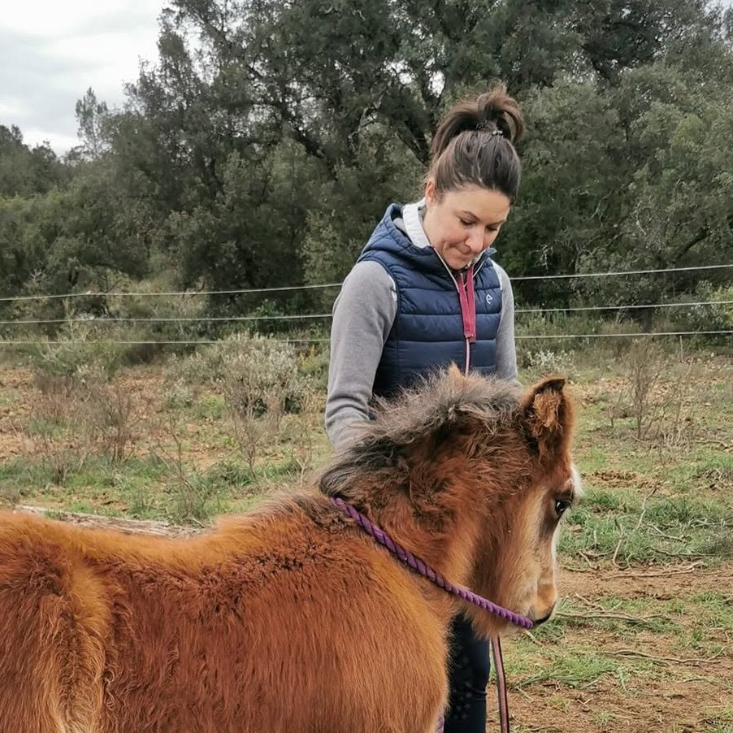
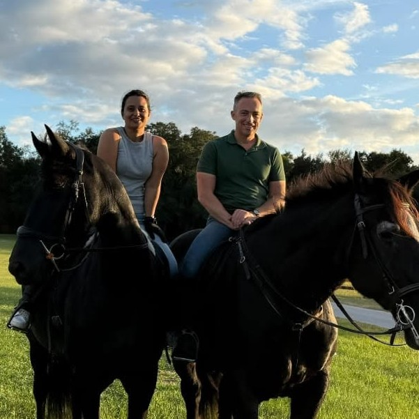
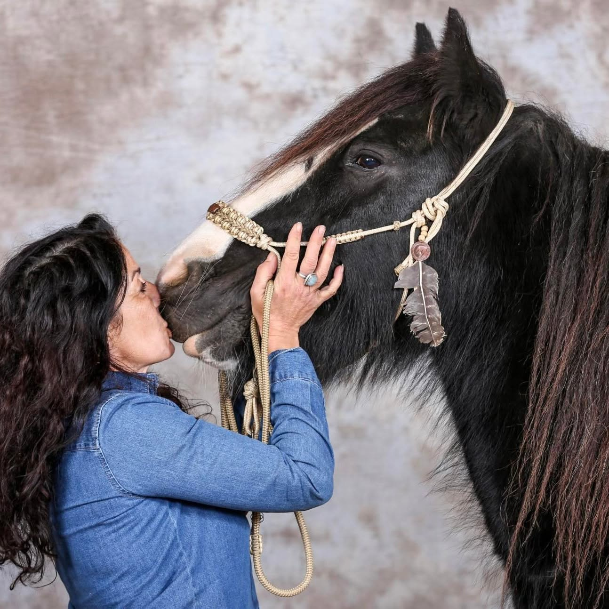
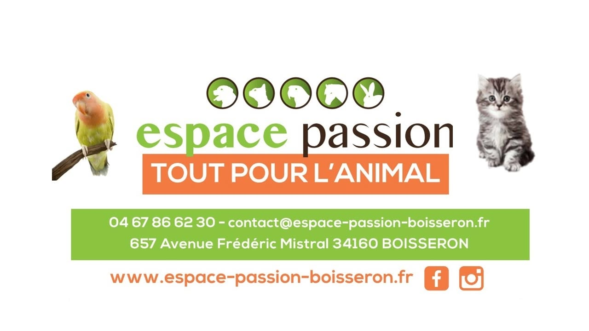
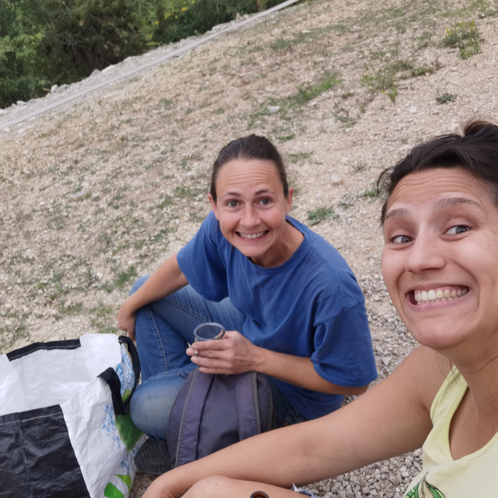
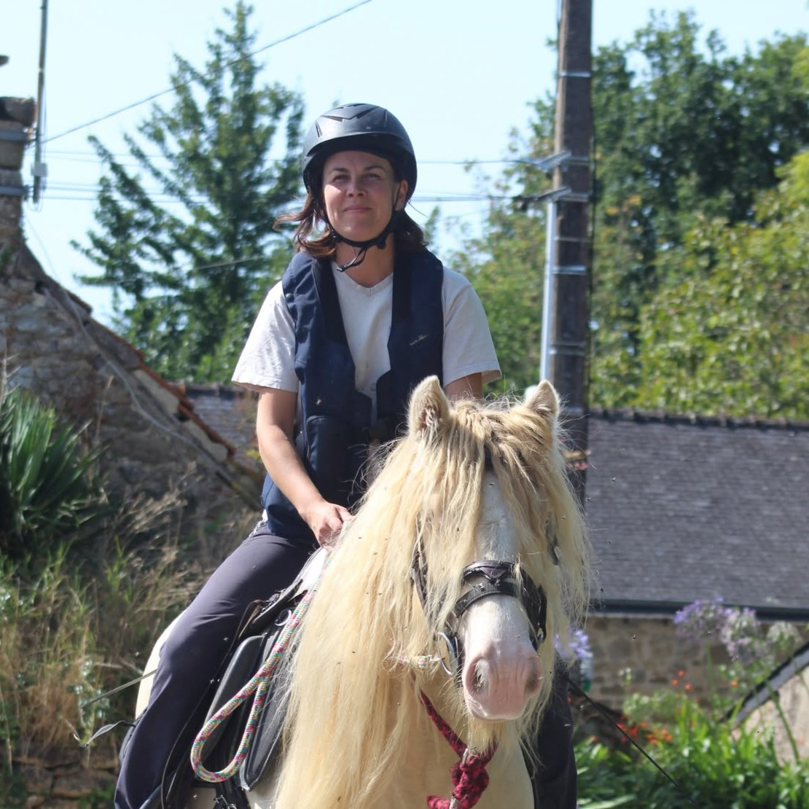

En Angleterre, je découvre un spectacle que je n'oublierais jamais. Lorsque le troupeau est appelé, les chevaux arrivent au galop depuis les collines. Avant même de les voir, on ressent leur présence : le sol vibre sous leurs foulées. Cette sensation me rappelle le bourdonnement des ailes du colibri (Hummingbird en Anglais). Un bruit presque imperceptible, mais une énergie bien réelle.
Humming Cob est né de cette rencontre entre le vombrissement du colibri et la puissance tranquille des chevaux.
Fondé sur des valeurs d'authenticité, notre élevage place le bien-être de ses chevaux au premier plan. Chaque naissance est un projet mûrement réfléchi et nos juments ne sont pas systématiquement mises à la reproduction.
Une même race, 2 studbooks. Chaque cheval a été soigneusement séléctionné et inscrit au studbook France Irish Cob. Une attention particulière ayant été porté sur des critères de niveau « Élite » : une morphologie harmonieuse et un bon tempérament.
En savoir plusNos chevaux évoluent de façon à respecter au mieux les 3F (FORAGE FRIENDS FREEDOM) ou les 6 besoins : RESPIRER - BOIRE - DORMIR - MANGER - BOUGER - COMMUNIQUER. Une vie en troupeau est indispensable pour forger des caractères sains, sociables et bien dans leur peau.
En savoir plusNos reproducteurs sont issus des meilleures lignées irlandaises et anglaises. Chaque individu constituant notre cheptel a été rencontré dans son pays d'origine (Oxford en Angleterre pour les SD - St Clears au Pays de Galles pour Avantgarde), avant d'être importé.
En savoir plusDès la naissance et tout au long de sa croissance, chaque poulain est manipulé à son rythme. Licol, marche en main, parage, vermifuges — tous nos jeunes chevaux partent avec les bases essentielles.
En savoir plusDossier complet fourni à l'achat : contrat de vente, carnet IFCE, suivi vétérinaire et album photo. Nous faisons appel à des professionnels spécialisés lorsque cela est nécessaire.
En savoir plusImplantés dans le Gard (30), au cœur de la garrigue cévenole. Visites sur rendez-vous pour rencontrer nos chevaux dans leur environnement naturel.
En savoir plus
Vanessa
Vanessa a assuré le suivi podologique de notre cheptel, de 2013 à 2020. J’ai également suivi ma première formation avec elle en 2014.

Adèle
Adèle suit le troupeau en dentisterie depuis 2014. D’une grande douceur, elle sait mettre les chevaux en confiance et souvent "danse" avec eux dans le pré, puisqu’ils sont en "liberté".

Julie
Julie suit notre troupeau depuis 2017. Sa pratique vise à redonner au cheval toute sa mobilité et son confort grâce à un travail manuel ciblé. Un suivi régulier contribue à son bien-être et à son équilibre général.

Léa
Spécialiste du comportement équin, je lui ai confié Ruby en 2019 puis Suzie en 2020. Je l’avais découverte lors du chargement compliqué d’une jument pas manipulée en 2017.

Pauline
Spécialiste du comportement équin, elle intervient pour nous aider au mieux dans l’accompagnement des poulains et des adultes et ce depuis 2020. Elle est également podologue et m’a permis de suivre une formation PEL.

Ifigeneia & Julian
Communication animale, magnétisme, Naturopathie et Alimentation Holistique : à eux deux, ils couvrent les soins du cheval à distance. Je leur fais confiance depuis les débuts timides d’Ifigeneia en Grèce en 2018.

Virginie
Les mots de Virginie : "La communication est un dialogue avec votre animal. On peut le comparer à un échange télépathique, d’autres diront une conversation d’âme à âme." Elle nous apaise réguliéremment depuis 2023.

Espace Passion
J’ai enfin trouvé un endroit où je trouve tout ce dont j’ai besoin coté alimentation : luzerne, pulpe de betterave, complément, etc.

Ludivine
Avec Lulu, c’est une histoire d’amitié, depuis 2017 ! Elle est éleveuse dans la Drôme et m’a fait confiance pour faire saillir ses juments par Archy, qui a été maladroit. La confiance est toujours présente, puisque je lui ai confié Sakura et bientôt Avantgarde !

Julie
Eleveuse en Bretagne, elle a la même passion que moi pour la génétique des robes. Elle, dans le crème, moi, le Pearl, je lui ai confié Ruby Jane pour quelques saisons de reproduction. Notre rencontre date de 2019.